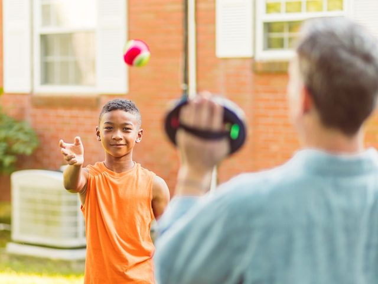
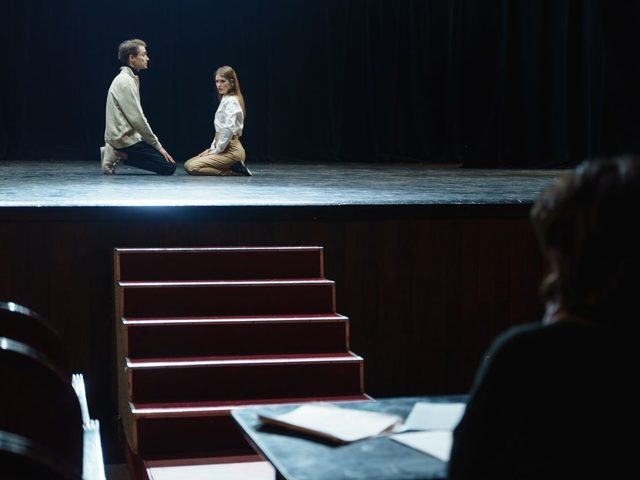
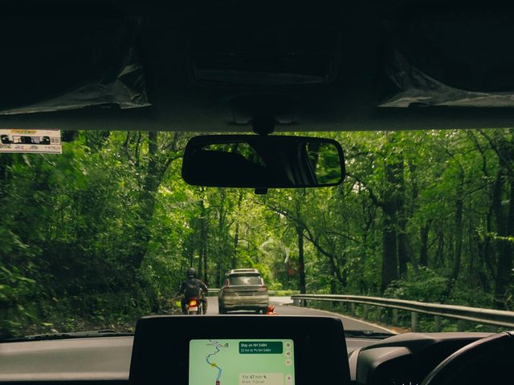
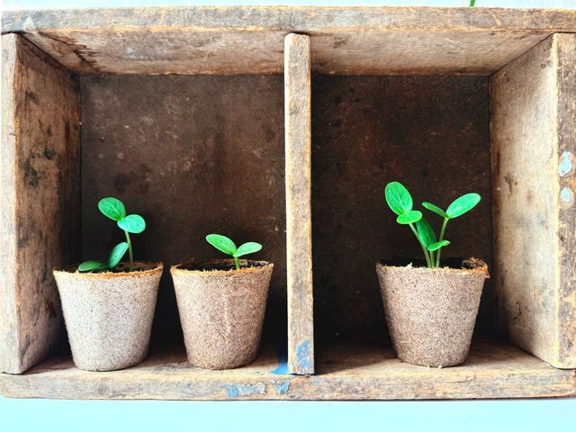
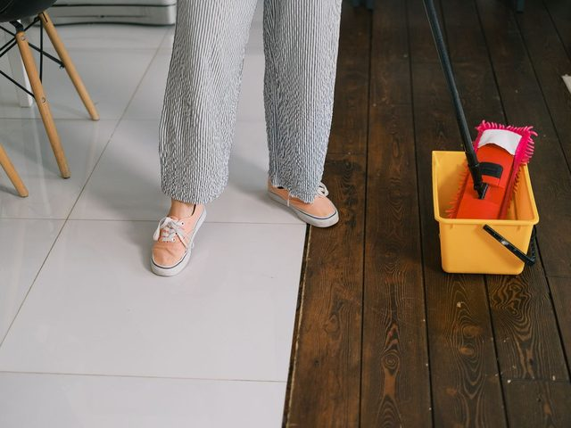

LALA WORD · UNIT 8
一字多義（八）
One Young Mind, Big Impact
27 個單字一字多義
本單元單字一覽
catch 是接住，也是「趕上公車」「染上感冒」；break 是弄壞，也是「休息一下」。這個單元有 6 個主題單字、18 個更多單字，再整理 before／ago、after／later、work／job／career、problem／question，和字尾 -ist（artist、dentist、scientist）。
countrydeliverdreamfixcatchsaveactbreakchannelclosedrivedryfloorgradegrowhalfkeepleavemopmovepastpetquarterthroughartistdentistscientist
每個字先聽 🔊，再一個意思一個意思看例句。
1. country 主題單字．2 個意思
country
複數 countries
n.國家
Japan is a beautiful country.
日本是一個美麗的國家。
n.鄉下in the country 在鄉下
My grandparents live in the country.
我的祖父母住在鄉下。
2. deliver 主題單字．4 個意思
deliver
deliver - delivered - delivered - delivering
v.發表（演說）；傳達deliver a speech 發表演說
The principal delivered a speech at the meeting.
校長在大會上發表演說。
v.遞送
Do you deliver food to this area?
你們有外送到這一區嗎？
v.履行（承諾）
He promised to help, and he delivered.
他答應要幫忙，也真的做到了。
v.接生
The doctor delivered the baby at 3 a.m.
醫生在凌晨三點接生了寶寶。
3. dream 主題單字．3 個意思

dream
dream - dreamed（dreamt） - dreamed（dreamt） - dreaming
n.夢；夢想a dream come true 夢想成真
I had a strange dream last night.
我昨晚做了一個奇怪的夢。
adj.夢想中的；理想的
This is my dream house.
這是我夢想中的房子。
v.做夢；夢想dream of / about 夢想；夢到
She dreams of becoming a singer.
她夢想成為歌手。
4. fix 主題單字．3 個意思

fix
fix - fixed - fixed - fixing
v.修理；整理；解決fix up 修理；fix a problem 解決問題
Dad fixed my bike.
爸爸修好了我的腳踏車。
v.安排；確定fix a date 訂日期
Let's fix a date for the party.
我們來訂派對的日期吧。
v.固定；盯著fix one's eyes on 盯著
Fix the poster on the wall with tape.
用膠帶把海報固定在牆上。
5. catch 主題單字．6 個意思

catch
catch - caught - caught - catching
v.偵測到；聽清楚
Sorry, I didn't catch your name.
抱歉，我沒聽清楚你的名字。
v.抓住；接住
Catch the ball!
接住球！
v.趕上（交通工具）
I ran to catch the bus.
我跑去趕公車。
v.染上（疾病）catch a cold 感冒
I caught a cold last week.
我上星期感冒了。
v.吸引（目光）catch one's eye 吸引某人的目光
The red dress caught my eye.
那件紅洋裝吸引了我的目光。
v.著（火）catch fire 著火
The old house caught fire.
那棟老房子著火了。
6. save 主題單字．3 個意思

save
save - saved - saved - saving
v.救
The lifeguard saved the boy.
救生員救了那個男孩。
v.節省
Taking the MRT saves time.
搭捷運省時間。
v.存（錢）；保留save up for 為…存錢；save a seat 保留位子
I'm saving money for a new bike.
我在存錢買新腳踏車。
7. act 更多單字．3 個意思

act
act - acted - acted - acting
v.行動；表現得act as if 表現得好像
We must act fast.
我們必須趕快行動。
v.扮演
She acted as Snow White in the play.
她在戲裡演白雪公主。
n.行為
Helping others is a kind act.
幫助別人是善良的行為。
8. break 更多單字．5 個意思

break
break - broke - broken - breaking
v.打破；弄壞
Who broke the window?
誰打破了窗戶？
v.打破（紀錄）；分開break the record 破紀錄；break up 分手
He broke the school record.
他打破了學校的紀錄。
v.違反break one's word 不守承諾
Don't break the rules.
不要違反規定。
n.休息take a break 休息一下
Let's take a ten-minute break.
我們休息十分鐘吧。
n.裂痕；骨折
The X-ray shows a break in his arm.
X 光顯示他的手臂骨折。
9. channel 更多單字．3 個意思

channel
複數 channels
n.頻道
Let's change the channel.
我們轉台吧。
n.管道；途徑
The internet is a good channel for learning.
網路是學習的好管道。
n.海峽
The ship sailed through the channel.
船駛過海峽。
10. close 更多單字．3 個意思

close
close - closed - closed - closing；close - closer - closest
v.關上
Please close the window.
請關窗。
v.打烊；關門
The shop closes at nine.
這家店九點打烊。
adj.靠近的；親近的be close to 靠近；親近（形容詞唸 [klos]）
My house is close to the school.
我家離學校很近。
11. drive 更多單字．4 個意思

drive
drive - drove - driven - driving
v.開車；載
Mom drives me to school every day.
媽媽每天開車載我上學。
v.迫使drive + 人 + crazy 把人逼瘋
The noise is driving me crazy.
那噪音快把我逼瘋了。
n.車程；兜風go for a drive 去兜風
It's a two-hour drive to Taichung.
到臺中要開兩小時的車。
n.幹勁；決心
She has the drive to win.
她有贏的決心。
12. dry 更多單字．2 個意思

dry
dry - drier - driest；dry - dried - dried - drying
adj.乾的；乾燥的the dry season 乾季
My clothes are dry now.
我的衣服乾了。
v.弄乾；變乾
Dry your hair before you go to bed.
睡覺前把頭髮吹乾。
13. floor 更多單字．2 個意思

floor
複數 floors
n.地板
The floor is wet. Be careful.
地板濕濕的，小心。
n.樓層on the + 序數 + floor 在第…樓
Our classroom is on the third floor.
我們的教室在三樓。
14. grade 更多單字．4 個意思

grade
grade - graded - graded - grading
n.年級
My sister is in fifth grade.
我妹妹讀五年級。
n.等級；品質
This is high-grade tea.
這是高級茶葉。
n.成績；分數get a good / bad grade 得到好／壞成績
I got a good grade on the test.
我考試得到好成績。
v.評分
The teacher is grading our tests.
老師正在改我們的考卷。
15. grow 更多單字．4 個意思

grow
grow - grew - grown - growing
v.生長；成長grow up 長大
Kids grow fast.
小孩長得很快。
v.留長（頭髮）
I want to grow my hair long.
我想把頭髮留長。
v.種植
Grandpa grows tomatoes in his garden.
爺爺在花園種番茄。
v.變得
It grew dark outside.
外面天色變暗了。
16. half 更多單字．2 個意思

half
複數 halves
adj.一半的half an hour 半小時；half a dozen 半打
I waited for half an hour.
我等了半個小時。
n.半票；一半
One adult and two halves, please.
一張全票、兩張半票，謝謝。
17. keep 更多單字．2 個意思

keep
keep - kept - kept - keeping
v.保持keep + V-ing 持續做；keep in mind 記住；keep one's word 守信
Keep quiet in the library.
在圖書館要保持安靜。
v.保留；留著keep the receipt 保留收據
Keep the change.
零錢不用找了。
18. leave 更多單字．4 個意思
leave
leave - left - left - leaving
v.離開leave for 前往
The train leaves at six.
火車六點開。
v.留下；遺忘leave a message 留言
I left my bag on the bus.
我把包包忘在公車上。
v.讓…保持某狀態
Don't leave the door open.
別讓門開著。
n.假期；休假on leave 休假中；sick leave 病假
Ms. Chen is on leave this week.
陳老師這星期請假。
19. mop 更多單字．2 個意思

mop
mop - mopped - mopped - mopping
v.拖（地）；擦
It's my turn to mop the floor.
輪到我拖地了。
n.拖把
Where is the mop?
拖把在哪裡？
20. move 更多單字．5 個意思

move
move - moved - moved - moving
v.移動
Don't move! There's a bee on your arm.
別動！你手上有一隻蜜蜂。
v.搬家
We moved to Taipei last year.
我們去年搬到臺北。
v.採取行動；繼續前進move on 放下；繼續前進
It's time to move on.
該向前走了。
v.使感動
Everyone was moved by her story.
每個人都被她的故事感動。
n.行動；舉動
It's your move.
輪到你走了（下棋）。
21. past 更多單字．4 個意思

past
n.過去in the past 在過去
In the past, people wrote letters.
以前人們寫信。
adj.過去的
It has been hot for the past few days.
過去幾天都很熱。
adv.經過
A bus went past.
一輛公車開過去了。
prep.（時間）過了
It's half past seven.
現在七點半。
22. pet 更多單字．2 個意思

pet
pet - petted - petted - petting
n.寵物keep a pet 養寵物
Do you have any pets?
你有養寵物嗎？
v.撫摸
You can pet the rabbit gently.
你可以輕輕摸兔子。
23. quarter 更多單字．3 個意思

quarter
複數 quarters
n.四分之一
Cut the cake into quarters.
把蛋糕切成四份。
n.十五分鐘a quarter past / to 過／差十五分
It's a quarter past three.
現在三點十五分。
n.季度（三個月）
Sales went up in the second quarter.
第二季的銷售量上升了。
24. through 更多單字．3 個意思

through
prep.穿過get through 熬過；通過
The train went through the tunnel.
火車穿過隧道。
prep.透過
I found this job through a friend.
我透過朋友找到這份工作。
adv.徹底地
Read the letter through before you sign it.
簽名前把信從頭到尾看完。
25. artist 更多單字．1 個意思
artist
art 藝術 + -ist；複數 artists
n.藝術家；畫家
Van Gogh was a famous artist.
梵谷是有名的藝術家。
26. dentist 更多單字．1 個意思
dentist
dent（牙齒）+ -ist；複數 dentists
n.牙醫see a dentist 看牙醫
I have a toothache. I need to see a dentist.
我牙痛，要去看牙醫。
27. scientist 更多單字．1 個意思
scientist
science 科學 + -ist；複數 scientists
n.科學家
She wants to be a scientist.
她想當科學家。
易混淆字：before 和 ago
| 單字 | 用法 | 例句 |
|---|---|---|
| before | 在…之前；也可以單獨用「以前」，常和完成式一起用 | I have seen this movie before.／before lunch |
| ago | 時間 + ago，從現在算回去多久以前，用過去式 | I met him two years ago. |
易混淆字：after 和 later
| 單字 | 用法 | 例句 |
|---|---|---|
| after | 在某件事、某時間之後：after + 名詞／子句 | Let's play after school. |
| later | 「之後；晚一點」，可以單獨用：see you later、three days later | See you later! |
易混淆字：work／job／career
| 單字 | 用法 | 例句 |
|---|---|---|
| work | 工作（不可數）；也當動詞 | I have a lot of work to do. |
| job | 一份工作（可數） | She got a part-time job. |
| career | 長期的職業生涯、事業 | He wants a career in music. |
易混淆字：problem 和 question
| 單字 | 用法 | 例句 |
|---|---|---|
| problem | 需要「解決」的問題、困難 | We need to solve this problem. |
| question | 需要「回答」的問題 | May I ask a question? |
字尾 -ist：從事某領域的人
| 原來的字 | 加 -ist | 意思 |
|---|---|---|
| art 藝術 | artist | 藝術家 |
| dent（拉丁文：牙齒） | dentist | 牙醫 |
| science 科學 | scientist | 科學家 |
| piano 鋼琴 | pianist | 鋼琴家 |
快問快答：這句的 粗體字 是什麼意思？
1My grandparents live in the country.鄉下
2The doctor delivered the baby at 3 a.m.接生
3She dreams of becoming a singer.做夢；夢想
4Fix the poster on the wall with tape.固定；盯著
5The old house caught fire.著（火）
6I'm saving money for a new bike.存（錢）；保留
7Helping others is a kind act.行為
8The X-ray shows a break in his arm.裂痕；骨折
快問快答：這句的 粗體字 是什麼意思？
1The ship sailed through the channel.海峽
2My house is close to the school.靠近的；親近的
3She has the drive to win.幹勁；決心
4Dry your hair before you go to bed.弄乾；變乾
5Our classroom is on the third floor.樓層
6The teacher is grading our tests.評分
7It grew dark outside.變得
8One adult and two halves, please.半票；一半
學完了！接下來
複習方法
review
- 回到「📗 單字卡」，按「遮中文」，看例句說出每個意思
- 特別記「容易忽略的意思」（例如 pen 圍欄、ball 舞會）
- 每個例句跟著 🔊 唸一次
準備好了
- 按右上角「📝 前往測驗」
- 測驗錯的題目要訂正到全對
- 訂正完成補送 1 點